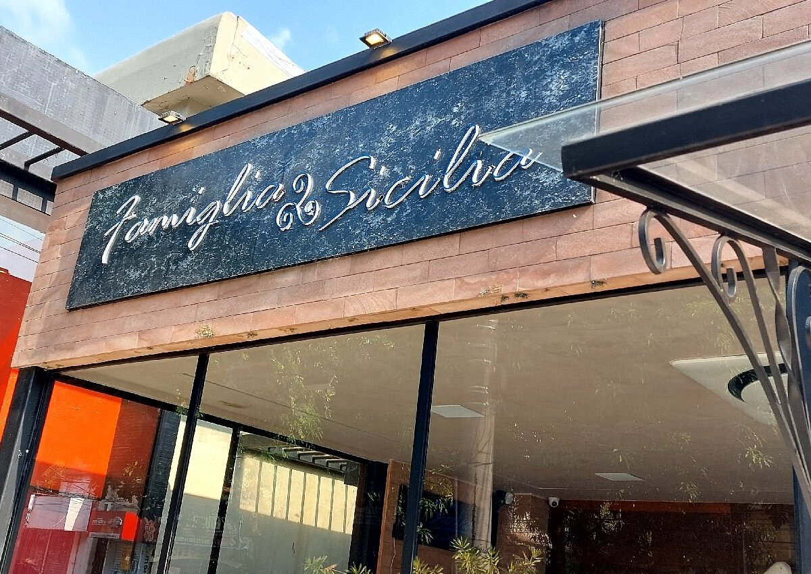
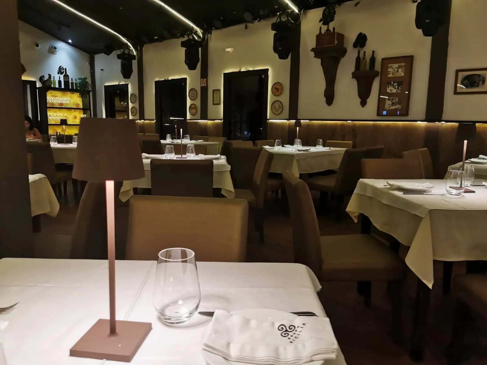
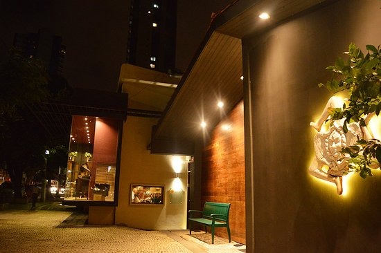
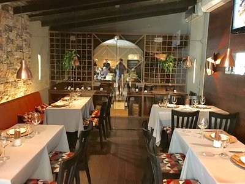
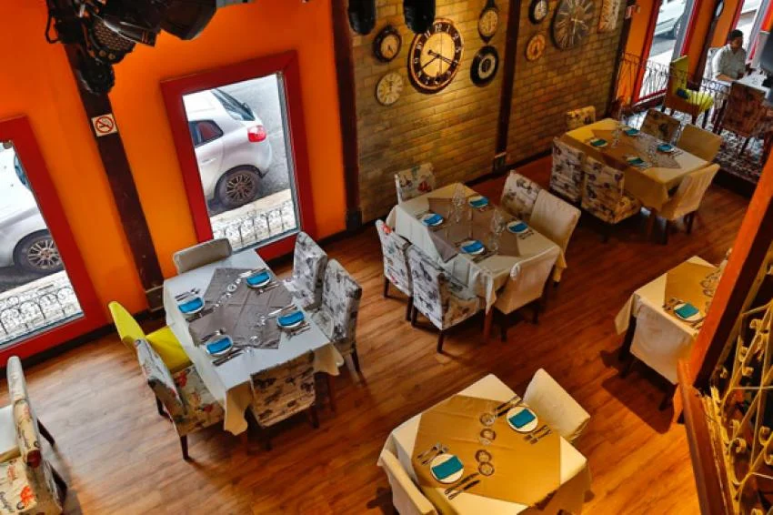
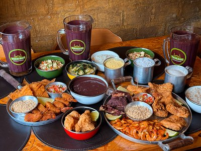

Especialidades
- Massas Artesanais
- Fusão Gastronômica (Itália-Pará)
- Frutos do Mar Frescos
- Sobremesas Finas
- Opções Vegetarianas








Antepastos e Bruschettas
R$ 45,00 a R$ 85,00

Massas, Risotos e Carnes
R$ 80,00 a R$ 160,00

Taças e Garrafas
R$ 30,00 a R$ 250,00
Com mais de 30 anos de tradição em Belém, o Família Sicilia é referência em alta gastronomia. Unindo as raízes italianas da família com a riqueza dos ingredientes amazônicos, o restaurante oferece uma experiência sensorial única, marcada pelo afeto e sofisticação.
Seja na famosa Lasanha da Nonna ou nas criações contemporâneas dos chefs, cada detalhe é pensado para celebrar a boa mesa e os momentos especiais.